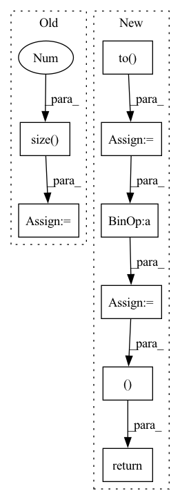

Pattern ID :29145
Before Change
index = edge_index[dim]
if edge_weights is None:
if isinstance(edge_index, Tensor):
edge_weights = torch.ones(edge_index.size(1 ) , dtype=torch.int,
device=edge_index.device)
else:
edge_weights = np.ones(edge_index.shape[1], dtype=np.int)After Change
if backend is torch_sparse:
assert edge_weights is None
deg = edge_index.sum(dim=dim).to( torch.float)
deg_inv = deg.pow(-1.0)
deg_inv[deg_inv == float("inf")] = 0
edge_index = deg_inv.view(-1, 1) * edge_index
return edge_index, None
index = edge_index[dim]
degree = weighted_degree(index, edge_weights, num_nodes=num_nodes)
return edge_index, edge_weights / degree[index]In pattern: SUPERPATTERN
Frequency: 3
Non-data size: 8
Instances Fragment ID: 85820317
Project Name: torchspatiotemporal/tsl
Commit Name: 50089afdf23de12eb6d11e9d5e7e64d949d45611
Time: 2022-08-18
Author: ivan.marisca@hotmail.it
File Name: tsl/ops/connectivity.py
M Class Name: AnonimousClass
N Class Name: AnonimousClass
M Method Name: normalize(4)
N Method Name: normalize(4)
M Parent Class:
N Parent Class:
M File Name: tsl/ops/connectivity.py
N File Name: tsl/ops/connectivity.py
M Start Line: 181
M End Line: 187
N Start Line: 215
N End Line: 225
Before Change
out_masks = make_non_pad_mask(olens).unsqueeze(-1).to(ys.device)
out_masks = torch.nn.functional.pad(out_masks.transpose(1, 2), [0, ys.size(1) - out_masks.size(1), 0, 0, 0, 0], value=False).transpose(1, 2)
out_weights = out_masks.float() / out_masks.sum(dim=1, keepdim=True).float()
out_weights /= ys.size(0 ) * ys.size(2)
// apply weight
l1_loss = l1_loss.mul(out_weights).masked_select(out_masks).sum()After Change
out_masks = torch.nn.functional.pad(out_masks.transpose(1, 2), [0, gold_spectrograms.size(1) - out_masks.size(1), 0, 0, 0, 0], value=False).transpose(1, 2)
out_weights = out_masks.float() / out_masks.sum(dim=1, keepdim=True).float()
out_weights /= gold_spectrograms.size(0) * gold_spectrograms.size(2)
duration_masks = make_non_pad_mask(text_lengths).to( gold_spectrograms.device)
duration_weights = (duration_masks.float() / duration_masks.sum(dim=1, keepdim=True).float())
// apply weight
l1_loss = l1_loss.mul(out_weights).masked_select(out_masks).sum()
duration_loss = (duration_loss.mul(duration_weights).masked_select(duration_masks).sum())
return l1_loss, duration_loss
Fragment ID: 85820319
Project Name: digitalphonetics/ims-toucan
Commit Name: b8532b46fafdc2f07c5ce57d6b7711db0682be18
Time: 2023-03-09
Author: lux.florian@gmail.com
File Name: TrainingInterfaces/Text_to_Spectrogram/ToucanTTS/ToucanTTSLoss.py
M Class Name: ToucanTTSLoss
N Class Name: ToucanTTSLoss
M Method Name: forward(8)
N Method Name: forward(5)
M Parent Class: torch.nn.Module
N Parent Class: torch.nn.Module
M File Name: TrainingInterfaces/Text_to_Spectrogram/ToucanTTS/ToucanTTSLoss.py
N File Name: TrainingInterfaces/Text_to_Spectrogram/ToucanTTS/ToucanTTSLoss.py
M Start Line: 35
M End Line: 43
N Start Line: 19
N End Line: 53
Before Change
index = edge_index[dim]
if edge_weights is None:
if isinstance(edge_index, Tensor):
edge_weights = torch.ones(edge_index.size(1 ) , dtype=torch.int,
device=edge_index.device)
else:
edge_weights = np.ones(edge_index.shape[1], dtype=np.int)After Change
if backend is torch_sparse:
assert edge_weights is None
deg = edge_index.sum(dim=dim).to( torch.float)
deg_inv = deg.pow(-1.0)
deg_inv[deg_inv == float("inf")] = 0
edge_index = deg_inv.view(-1, 1) * edge_index
return edge_index, None
index = edge_index[dim]
degree = weighted_degree(index, edge_weights, num_nodes=num_nodes)
return edge_index, edge_weights / degree[index] Fragment ID: 85820318
Project Name: torchspatiotemporal/tsl
Commit Name: f28e5a2fddc34eeb90a13c113512c8ab12b6138b
Time: 2022-07-20
Author: ivan.marisca@hotmail.it
File Name: tsl/ops/connectivity.py
M Class Name: AnonimousClass
N Class Name: AnonimousClass
M Method Name: normalize(4)
N Method Name: normalize(4)
M Parent Class:
N Parent Class:
M File Name: tsl/ops/connectivity.py
N File Name: tsl/ops/connectivity.py
M Start Line: 181
M End Line: 187
N Start Line: 215
N End Line: 225